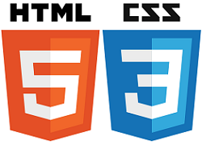

Aula HTML
Fundamentos de HTML
Tags HTML
O que são tags e para que servem?
Significado semântico das tags
Tags representam uma ideia, não um formato.
Tags de texto
alguns exemplos de tags para texto
b, i, u, s
Este é um texto que contém negrito.
Este texto contém itálico
As tags para negrito e itálico, são tags inline. Tags HTML podem ser são inline e tags de bloco.
A tag genérica de bloco é div, e a tag inlinegenérica é span.
Mesmo tags genéricas podem
alterar seu comportamento.
Outras tags de texto
H2O
E = mC2
Listas ordenadas
- item a
- item b
- subitem 1
- subitem 2
- item c
Listas não ordenadas
Listas de definição
- termo
- significado
- manga
- de camisa
- fruta
- estudante
- aluno
- que ainda está aprendendo
Imagens


Links
Links podem ser dentro da própria página, dentro do próprio site e links externos.
Links externos
Página do professor
Dentro do site
Sobre
Dentro da página
Topo
Formulários
Formulários são mais interessantes com sites dinâmicos.
Método GET
Método POST